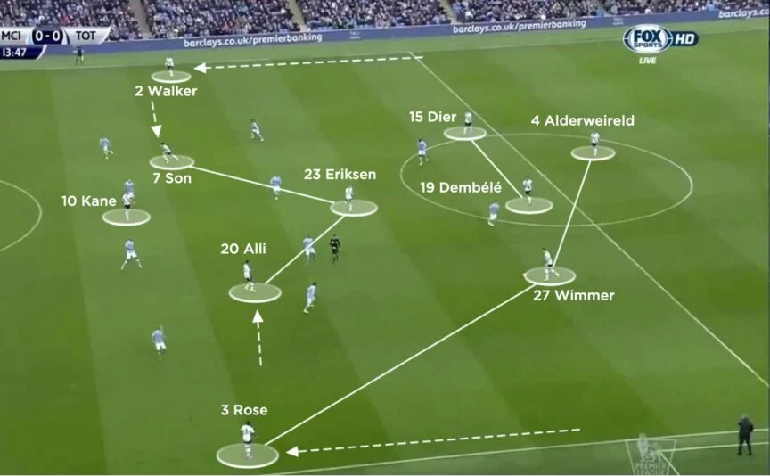
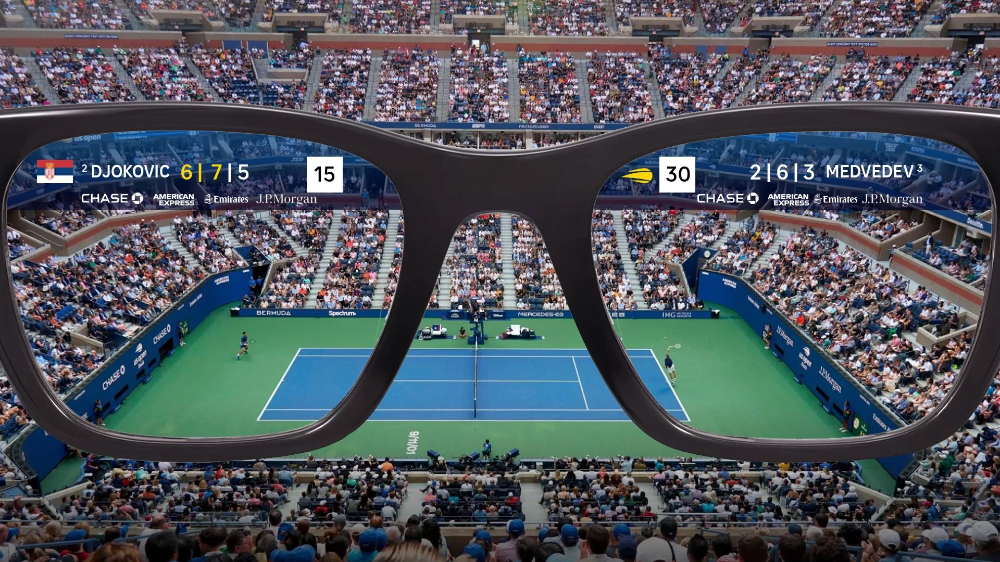

La veille informatique est le processus de collecte, d'analyse et de suivi des informations technologiques
et numériques pour rester à jour sur les nouvelles tendances, innovations, menaces et opportunités dans le
domaine de l'informatique. Cela permet aux entreprises et aux professionnels d'anticiper les évolutions,
d'améliorer leurs stratégies et de prendre des décisions informées.
Les applications utilisées sont :
Ma veille est basée sur l'intelligence artificielle dans le monde du sport

Comment l'IA révolutionne le football
Cette IA développée par Google et Liverpool permet d'entraîner les joueurs à mieux se positionner et
mieux tirer, savoir exactement où se placer dans chaque cas de contre-offensive et d'attaque.
L'IA qui agit sur la santé des sportifs
L'IA permet de réaliser des tests pour les sportifs de haut niveau et de leur proposer différents
programmes d'entraînement adaptés aux performances quotidiennes grâce à des capteurs intégrés dans
les vêtements.

L'IA qui rend une meilleure expérience aux fans
L'IA permet d'améliorer l'expérience des fans en leur offrant des contenus immersifs et des analyses
sportives en temps réel, augmentant leur engagement avec les équipes qu'ils soutiennent.